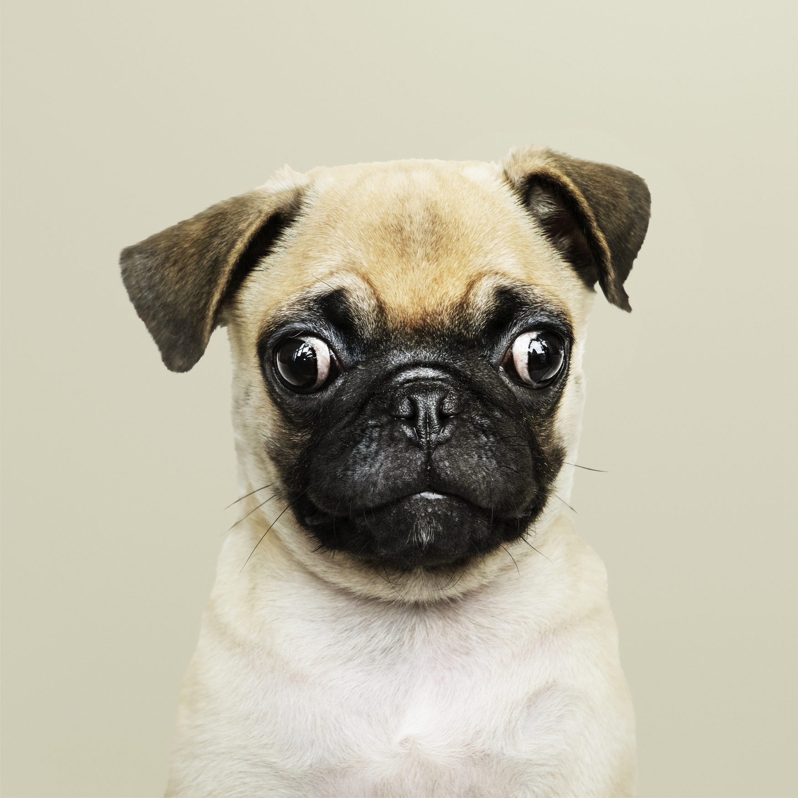
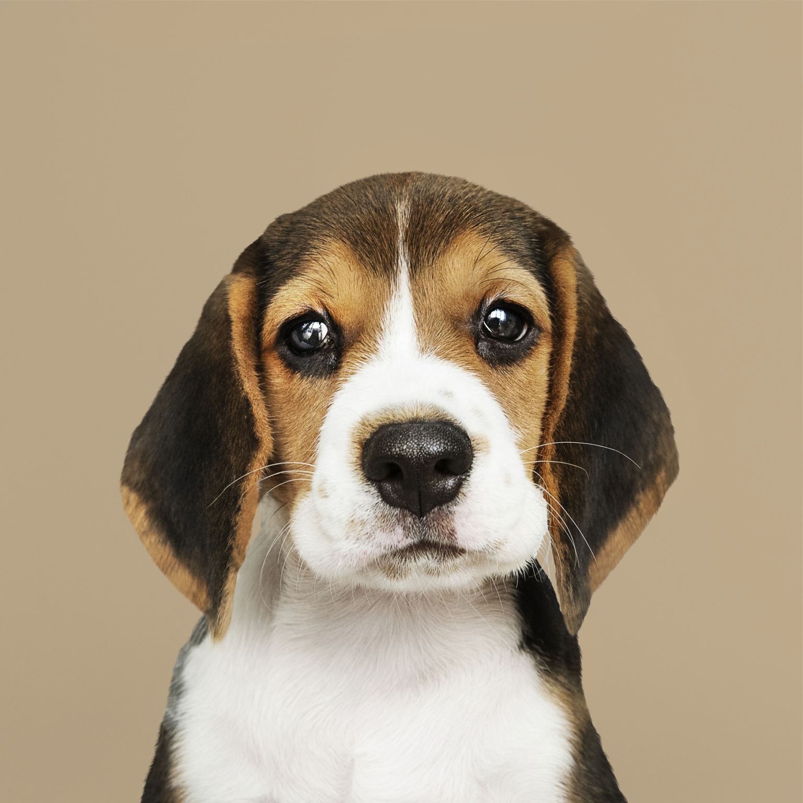
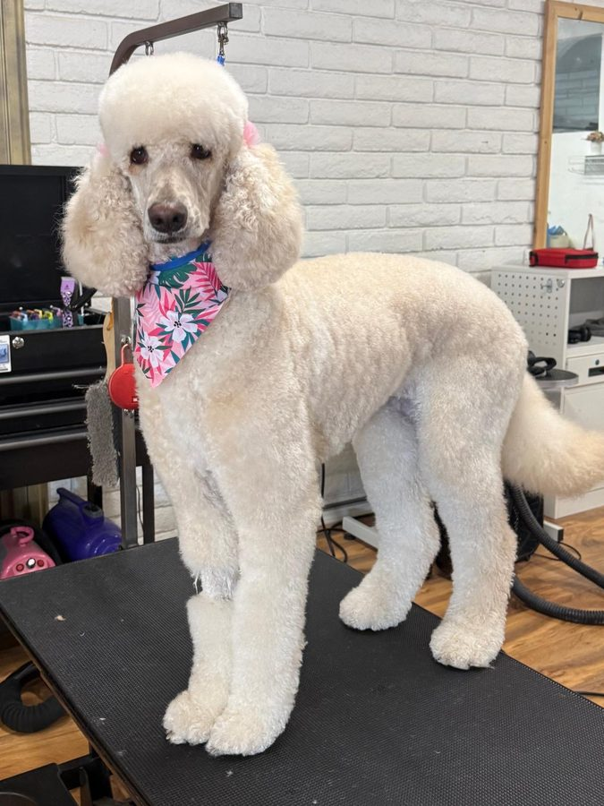
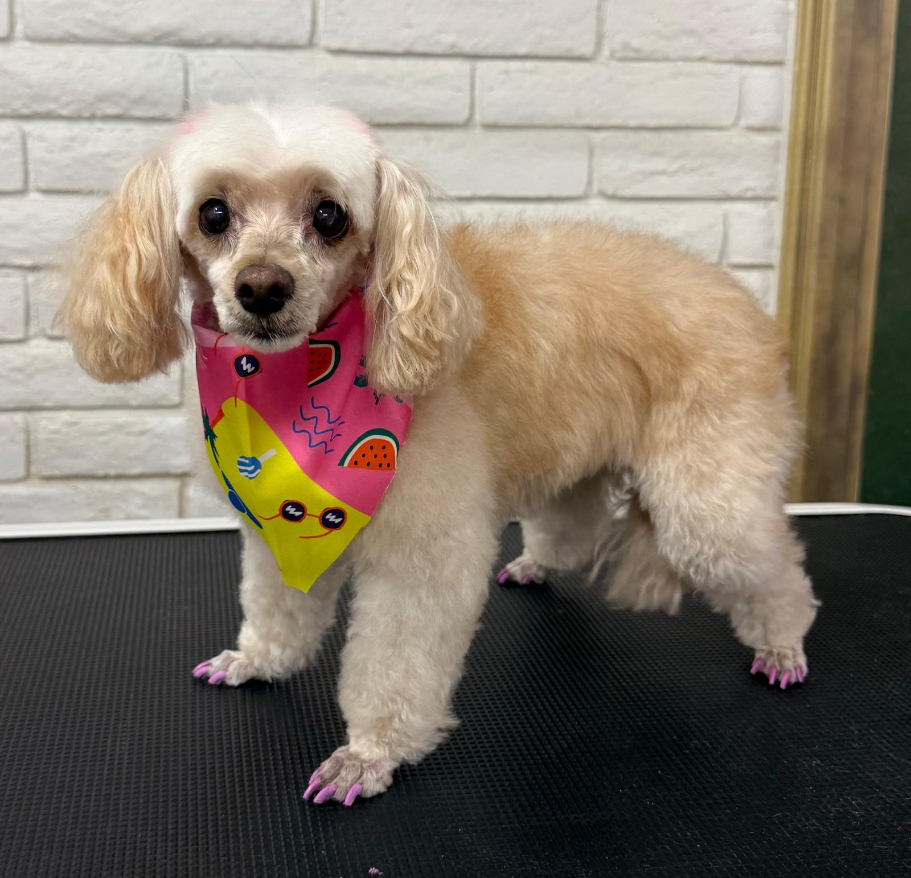

Gentle handling
We take time to help each pet settle in before care begins.
El Paso pet care
Professional dog and cat grooming, spa care, daycare, and overnight stays in West El Paso.




Happy pets, happy humans
Pets are family. At Petssible, we build every visit around comfort, patience, and the small details that make a difference, whether your pet is here for a fresh cut, a nail trim, a play day, or an overnight stay.
Our El Paso team is here to create a clean, playful, and safe experience for pets and the people who love them.
Start a visit with Petssible →We are best in
We take time to help each pet settle in before care begins.
We listen to what you want and explain the next step.
Every coat, routine, and comfort level deserves its own approach.
Pet care, made personal
Petssible service
Dog grooming appointments in El Paso with a patient, caring approach for every coat type and size.
Explore Dog Grooming →Petssible service
Gentle cat grooming in El Paso, including bathing, deshedding, nail trims, and coat care.
Explore Cat Grooming →Petssible service
A calm, patient introduction to puppy grooming in El Paso.
Explore Puppy Grooming →Petssible service
Bath, brush, drying, and coat refresh appointments for dogs in El Paso.
Explore Bath & Brush →Petssible service
Deshedding services in El Paso for pets with heavy or seasonal coat shedding.
Explore Deshedding →Petssible service
Gentle nail trim appointments for dogs and cats in El Paso.
Explore Nail Trims →Petssible service
Dog daycare in El Paso with care, attention, and a pet-friendly environment.
Explore Dog Daycare →Petssible service
Overnight stays and pet care options in El Paso, Texas.
Explore Overnight Stays →Let's meet
Choose a service and a time that works for you. The Petssible team will confirm your visit.
Fresh from the grooming table
These are real photos from Petssible grooming visits. Every coat, comfort level, and finish is different.




Real client feedback
★★★★★
“I had such a great experience at Petssible Pet Grooming! From scheduling the appointment to drop-off and pick-up, everything was smooth and easy. My doggy Coco was a little nervous at drop-off, but she was so happy when I picked her up. She came home clean, fluffy, shiny, and smelling amazing. We will definitely be coming back!”
Stacie Lopez
Google review · 5 months ago
★★★★★
“Went to take my little one to get her nails clipped and they went above and beyond to make her feel comfortable and even painted her nails with pet safe nail polish. She looks so adorable. Cynthia did a great job”
selena pedroza
Google review · 4 months ago
★★★★★
“My puppy went in looking a wreck, and when I picked him up, he looked like a whole new puppy! So fluffy and cute! I absolutely loved how his groom turned out! And the ladies there were all so kind and hospitable! Don’t see any reason not to be a regular! Thank you!”
Hailey Hindman
Google review · 4 weeks ago
Serving the El Paso region
Our shop is at 369 Shadow Mountain Dr Ste B in El Paso. Browse our local service-area pages for grooming information close to home.
Explore service areasVisit Petssible
369 Shadow Mountain Dr Ste B
El Paso, TX 79912
Monday to Friday, 8 AM–5 PM
Saturday, 9 AM–6 PM
Good to know
To help establish group play, Petssible asks for dog drop-off by 9 AM. Call ahead to ask about an exit bath or a different schedule.
Something that smells like home, such as a blanket, T-shirt, or even a sock, can help your dog feel more comfortable while away from you.
For most dog-care settings, puppies need their first round of adult shots. Call Petssible so the team can advise based on your pet and the service you need.
More answers
Yes. Petssible offers cat grooming. Tell us a little about your cat when you request an appointment so the team can help plan the visit.
Please request a visit or call Petssible first. The team can confirm the right time and help keep your pet's wait as calm as possible.
We are at 369 Shadow Mountain Dr Ste B in El Paso, Texas. Use the directions link or call (915) 407-5512 if you need help finding us.
Ready to book?
(915) 407-5512 · Mon-Fri 8:00 AM-5:00 PM, Sat 9:00 AM-6:00 PM
Call (915) 407-5512